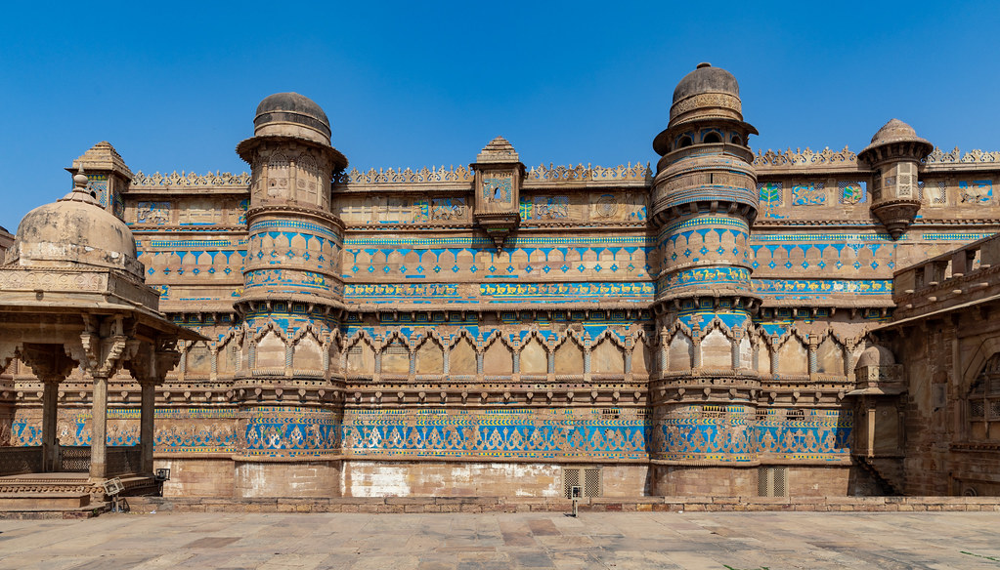
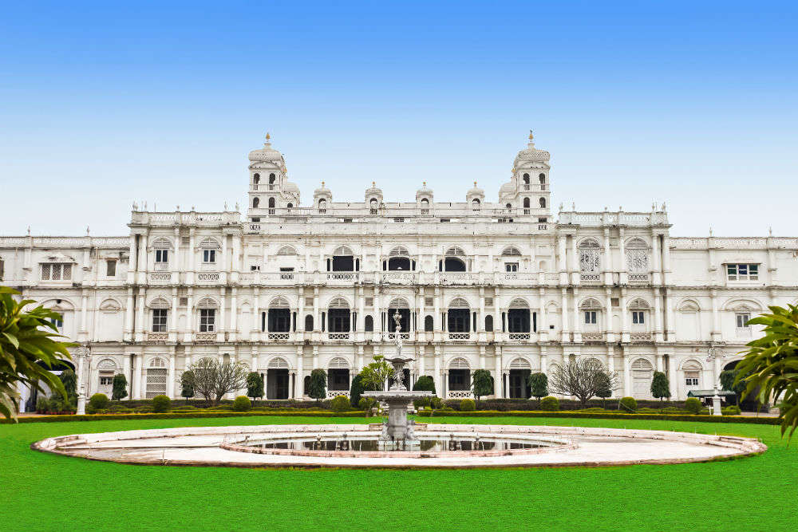
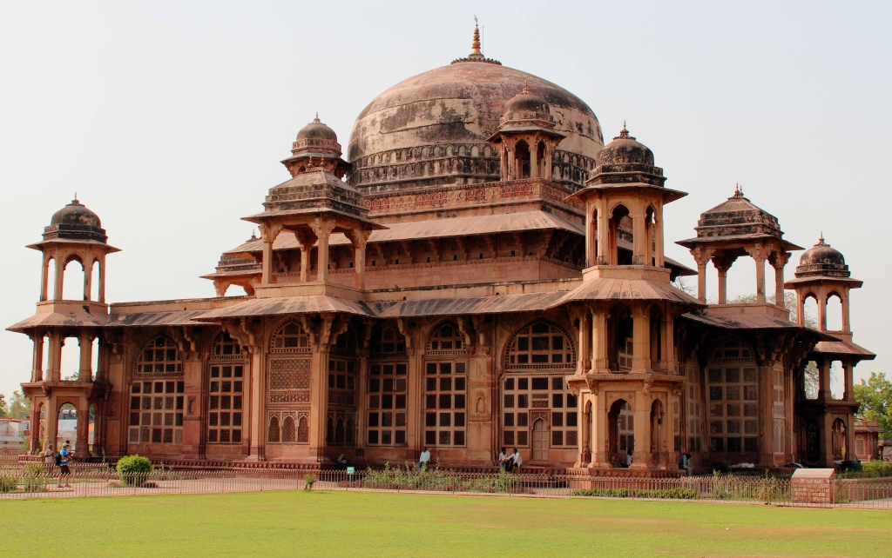
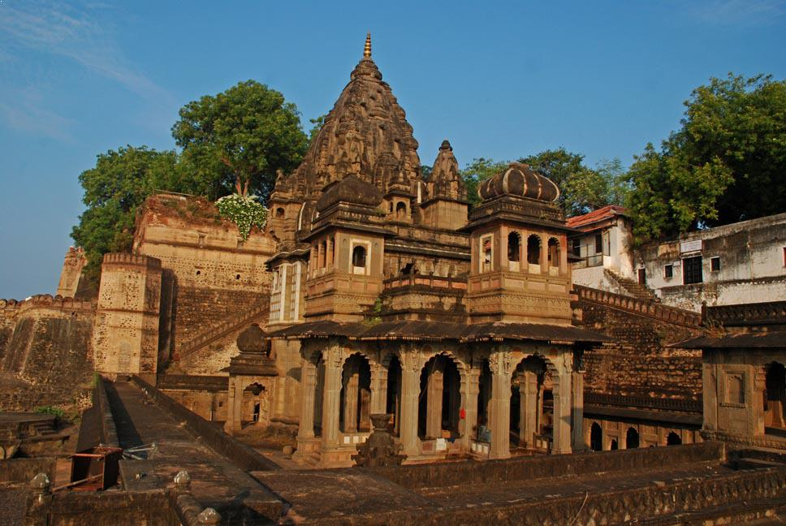
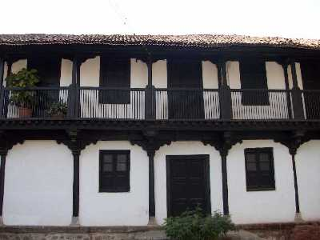
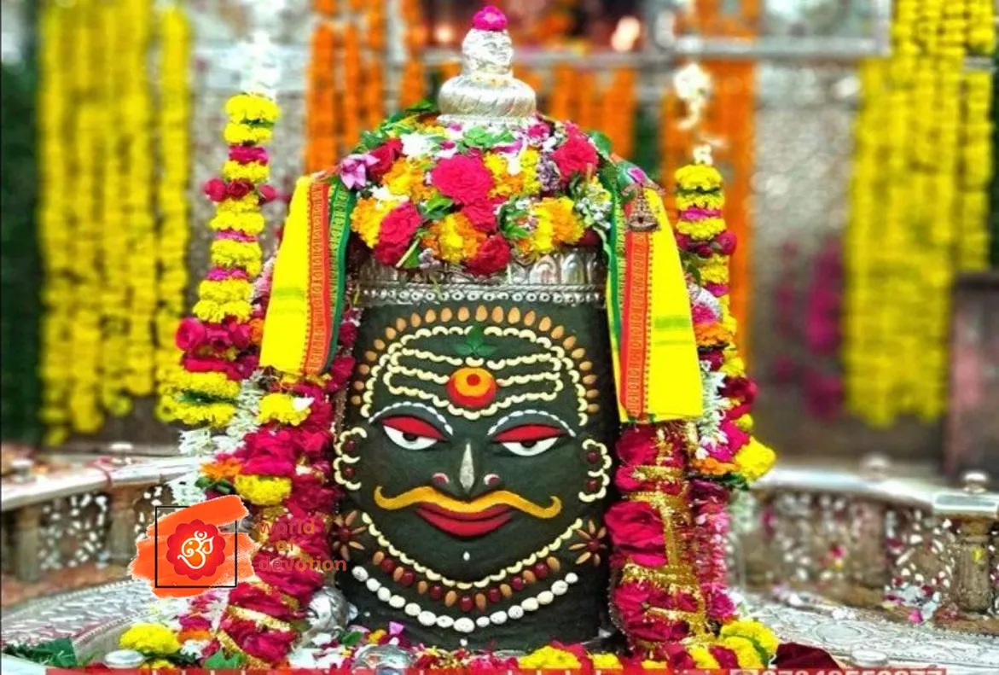
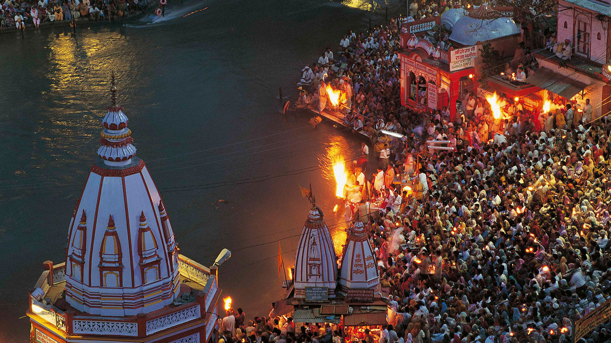
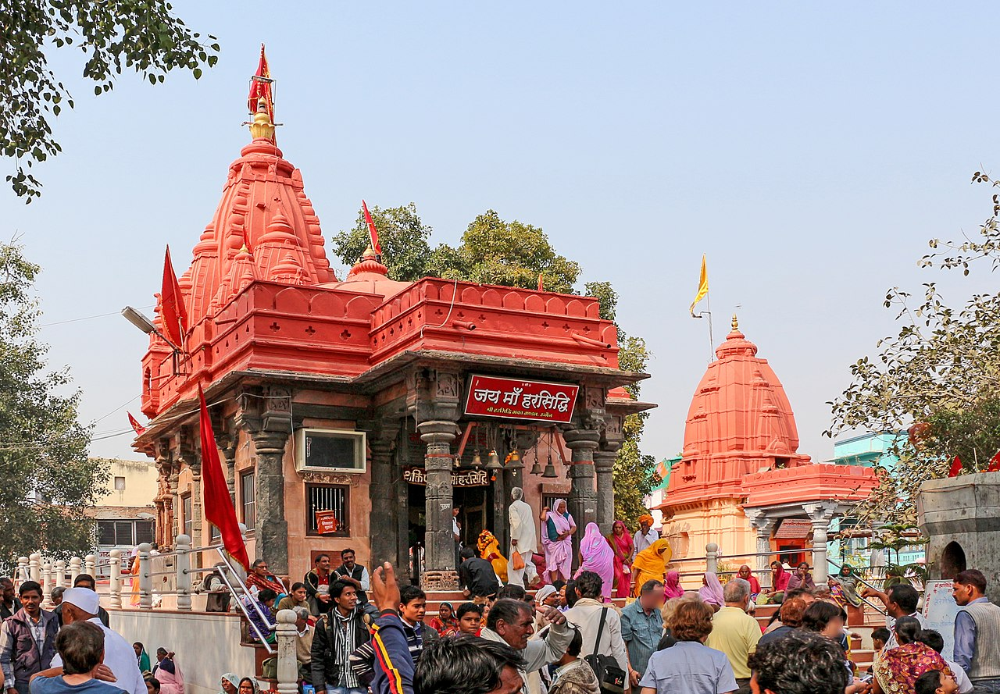

Heritage Sites Of Madhya Pradesh
-
The Gwalior Fort (Gwāliiyar Qila) is a hill fort near Gwalior, Madhya Pradesh, India.The modern-day fort, consisting a defensive structure and two palaces was built by Tomar Rajput ruler Man Singh Tomar.Referred to as 'the pearl amongst fortresses in India' by Mughal emperor Babur, the Gwalior Fort is one of the most impenetrable fortresses located in the entire northern and southern India and is a place you definitely must visit.An inseparable part of the identity and architecture of the city, evidence suggests that it has been around since 6th Century. It is also the places where the second oldest reference of the number 'zero' has been found in the form of a carving inside a temple on the top of the fort.
 -

Jai Vilas Palace , also known as the Jai Vilas Mahal, is a nineteenth century palace in Gwalior, India. It was established in 1874 by Jayajirao Scindia, the ruler of the princely state of Gwalior in the British Raj.It is a symbol of age-old Indian culture and opulence, preserved to the modern day.The Maharaja of Gwalior, had this magnificent edifice built to ensure a grand welcome for King Edward VII, the then Prince of Wales in 1874.Today, it serves as a residence for the descendants of the royal Maratha Scindia family. The palace also serves as a museum stretched over 35 rooms, houses the Chitrangada Raje Art Gallery and a library that comprises more than 5,000 books. The Jai Vilas Palace has an intricately designed Durbar Hall.
-
The Tomb of Mohammed Ghaus was built in 16th century AD during the Akbar's rule. Ghaus Mohammed was an Afghan Prince who later converted into a Sufi saint. According to legend, Mohammad Ghaus assisted Babur when he was conquered the fort of Gwalior in 1526 CE. The Sufi saint who belongs to 16th century occupies an important position in the history of Mughal India and is said to have had great influence over Mughal emperors like Babur and Humayun.Tomb of Ghaus Mohammed is a prominent pilgrimage center of both Muslims and Hindus. The Memorial of Tansen, also known as the Tomb of Tansen, is located in the vicinity of Muhammad Ghaus Tomb. Tansen was the famous musician and one among the nine jewels of Akbar's court.

---Gwalior---
Gwalior is a major city in the central Indian state of Madhya Pradesh; it lies in northern part of the state and is one of the Counter-magnet cities. The historic city and its fortress have been ruled by several historic northern Indian kingdoms. From the Kachchhapaghatas in the 10th century, Tomars in the 13th century, it was passed on to the Mughal Empire, then to the Maratha in 1754, followed by the Scindia in the 18th century.-
Ahilya Fort in the central Indian town of Maheshwar, sits high above the sacred river Narmada. Maharani Ahilyabai Holkar ruled here from 1765 to 1796 and built Ahilya Wada, her personal residences, offices, and darbaar audience hall, within the fort. It is also known as the Queen's fort. This fort was also the administrative headquarter of Rani Ahilyabai during her reign and currently it has been converted into a guesthouse, which is managed by the son of the last Maharaja of Indore, Prince Shivaji Rao Holkar.The views over the river and ghats are exceptional. Replete with myths and legend, Ahilya Fort offers guests a rare chance to get off the tourist trail and an abundance of things to see and do.

-

Ahilyeshwar TempleThis is another temple that is dedicated to Lord Shiva. The Ahilyeshwar Temple is also testament to the splendid architectural skills of the Maratha workmen. The temple comprises of intricate designs and artwork in honour of the deity. Apart from being the shrine of Lord Shiva, this temple also has a shrine of Lord Rama. With a very soothing atmosphere, this place is a must visit after a hectic day.The temple is within the fort adjoining many other temples and the Ahilya Ghat.The first place to head to here is the Maheshwar Ghat. Situated by the banks of the majestic Narmada River, with its waters glistening a soft golden in the mellow morning sunshine, you will notice how this place brims over with Hindu devotees, seeking holy blessings at this spiritual site.
-
Rajwada Rajwada of Maheshar is built by the Holkars of the Maratha Empires about two centuries ago, which reflects in Maratha Architectural style dominantly , but it also show case Mughal and French trends.13 feet high Rani Ahalyabai statue standing tall right at the main entrance is the special attraction of Rajwada. Rajwada is the place where Ahilyabai use to sit for administration and justice for all. Rajwada complex is best approachable from the north entrance of the fort which is called as Ahilya Dwar, one of the five gateways of the fort. This is where Ahilyabai Holkar used to reside. True to her self, the residence is quite simple and sober. It's good to visit it to get more information about her rule and deeds and how she setup the city of Maheshwar.

---Maheshwar---
is a town in Khargone district of Madhya Pradesh state, in central India. The Town lies on the north bank of the Narmada River.Maheshwar is believed to be built on the site of the ancient city of Somvanshya Shastrarjun Kshatriya, and was the capital of king Kartavirya Arjuna, (Shree Shastrarjun) who is mentioned in the Sanskrit epics Ramayana and Mahabharata.-
Mahakaleshwar temple Mahakaleshwar Jyotirlinga is a Hindu temple dedicated to Shiva and is one of the twelve Jyotirlingams, shrines which are said to be the most sacred abodes of Shiva. The idol of Mahakaleshwar is known to be dakshinamukhi, which means that it is facing the south. This is a unique feature, upheld by the tantric shivnetra tradition to be found only in Mahakaleshwar among the 12 Jyotirlingas. The images of Ganesh, Parvati and Karttikeya are installed in the west, north, and east of the sanctum sanctorum. To the south is the image of Nandi, the vehicle of Shiva. The Mahakal dominates the life of the city and its people, even in the midst of the busy routine of modern preoccupations, and provides an unbreakable link with ancient Hindu traditions. On the day of Maha Shivaratri, a huge fair is held near the temple, and worship goes on through the night.
 -

Kumbh Mela Ujjain Simhastha is a Hindu religious mela held every 12 years in the Ujjain city of Madhya Pradesh, India. The name is also transliterated as Sinhastha or Singhastha.It is one of the four fairs traditionally recognized as Kumbha Melas, and is also known as Ujjain Kumbh Mela. According to Hindu mythology, Vishnu dropped drops of amrita (the drink of immortality) at four places, while transporting it in a kumbha (pot). These four places, including Ujjain, are identified as the present-day sites of the Kumbh Mela.The Simhastha at Ujjayini pays special reverence to the temple of Mahakaleshwar Jyotirlinga, which is the abode of Lord Shiva's Swayambhu lingam. A river-side festival, it is celebrated on the banks of Shipra river. The fair attracts millions of pilgrims.
-
Harsiddhi Temple This temple occupies a special place in the galaxy of ancient sacred spots of Ujjain. Seated between the idols of Mahalaxmi and Mahasaraswati, the idol of Annapurna is painted in dark vermilion color. The Sri Yantra, the symbol of power or shakti, is also enshrined in the temple.According to the Shiva Purana, when Shiva carried away the burning body of Sati from the sacrificial fire, her elbow dropped at this place.The temple was reconstructed during the Maratha period and the two pillars adorned with lamps are special features of Maratha art. These lamps lit during Navaratri, present a glorious spectacle. There is an ancient well on the premises, and an artistic pillar adorns the top of it.
 -

Ram Ghat Extremely popular as the venue of the famous Kumbh Mela in Ujjain, Ram Ghat is one of the biggest pilgrim places in India. It is where millions of pilgrims gather during the event. The aarti here is renowned and the ghat is known to be the oldest bathing ghat in Ujjain, almost as old as the Kumbh mela itself.Ram Ghat is located on the bank of the river Shipra. The evening Shipra aarti is one of the best attractions at Ram Ghat. There is a wide range of temples located at the ghat, out of which the temple of Chitragupta is the most revered one. Take a dip in Shipra River and come out painted in the shades of divinity – this is an excellent place to rejuvenate the spirituality in you.
---Ujjain---
A city in Ujjain district of the Indian state of Madhya Pradesh. It is one of the Hindu pilgrimage centres of Sapta Puri famous for the Kumbh Mela held there every 12 years. The famous temple of Mahakaleshwar Jyotirlinga is located in the center of the city. An ancient city situated on the eastern bank of the Shipra River, Ujjain was the most prominent city on the Malwa plateau of central India for much of its history. It was the capital of the ancient Avanti kingdom, one of the sixteen mahajanapadas.